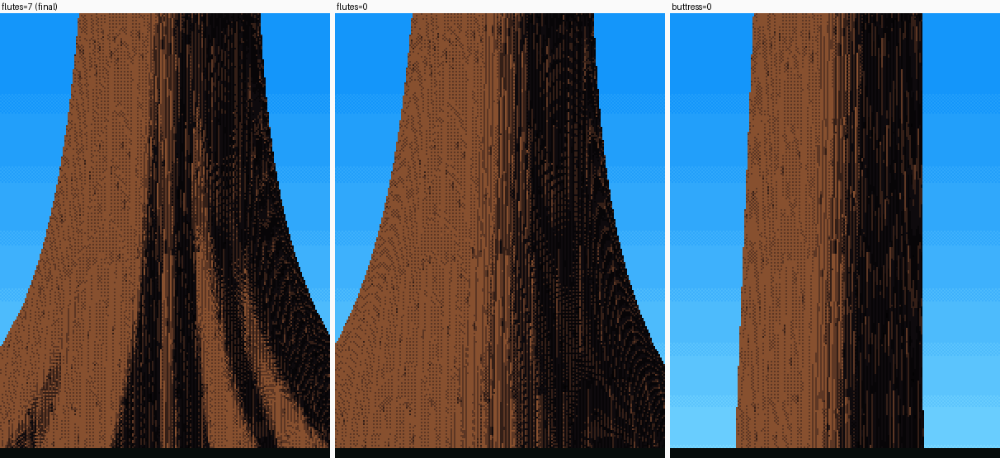

6. The cedar's fluted buttress
Back to the tutorials. Code: paint._wood and grow.grow (flare), in ~/work/pixelart-studies/elements/conifers/.

The final boles at 3 cm/px beside photos. The cedar (third row) is the one that works; the critic: "flared, fluted buttress with the flutes carried in light and dark bands. It reads beside the photo."
An old western redcedar's base is "broadly flared, buttressed and fluted" (naturalist, 02-trees.md): deep vertical valleys between rounded ribs, running up out of the ground into the trunk. In a photo the flutes are read almost entirely by light: each rib has a lit flank and a dark valley. The outline hardly shows them.
Two things at once
1. The flare (grow.grow): the radius grows toward the ground.
flare = sp.buttress * dbh * (1.7 if age == "old" else 1.0) * np.exp(-ys / (0.035 * H + 0.5))
rs = rs + flare
2. The flutes (paint._wood): the bole is sampled as a surface over height and angle θ round its visible half. Near the ground the radius ripples. And, the part that matters, the normal is tilted by the ripple's own slope, so each valley turns away from the light:
dlog = np.zeros_like(R)
if s.get("trunk") and tr.sp.flutes > 0:
yb = (a[1] + axis[1] * TT)
fl = np.exp(-yb / (0.05 * tr.H + 0.6)) * tr.sp.buttress # flutes fade out up the bole
ph = TH * tr.sp.flutes + 1.3
amp = 0.22 * fl
R = R * (1 + amp * np.cos(ph) ** 3) # ribs: cos^3 makes them rounded, valleys sharp
dlog = amp * 3 * np.cos(ph) ** 2 * -np.sin(ph) * tr.sp.flutes # dR/dtheta / R
Nrm0 = np.cos(TH)[..., None] * e2 + np.sin(TH)[..., None] * e1 # the smooth cylinder's normal
Eth = -np.sin(TH)[..., None] * e2 + np.cos(TH)[..., None] * e1 # the tangent round the bole
Nrm = Nrm0 - np.clip(dlog, -2, 2)[..., None] * Eth * 0.8 # flute valleys turn from the light
Nrm /= np.linalg.norm(Nrm, axis=-1, keepdims=True)
pts.append((C + R[..., None] * Nrm0).reshape(-1, 3)) # position from the rippled radius
nrm.append(Nrm.reshape(-1, 3)) # light from the tilted normal
The tilt term is the whole technique. The normal of a surface r(θ) has a tangential component −(dr/dθ)/r; I scale it by 0.8. Without it the ripple moves only the silhouette by a pixel or two, and the flutes are invisible.

Old cedar at 3 cm/px, sun from the left:
flutes=7(the final painter): light and dark bands carried up into the flare;flutes=0: the same flare, smooth, with only the bark strips and a terminator;buttress=0: a plain column.
The rest of the wood, briefly
- Hard material, ordered dither. Wood uses a 2×2 Bayer dither across step seams, narrowed to 0.35 of a step. The stochastic foliage dither turned every bole to sandpaper.
- Bounce light. Old boles in a forest get strong reflected light from the floor and the trunks around them. The critic pointed it out, and a
bounceterm of 0.12 in the wood's ambient lets bark texture show on the shadow side. - Bark patterns are designed in metres on the bole surface (arc length round the bole × height) and faded out when a feature drops under about 1.5 px. The cedar's fibrous strips are wandering vertical stripes 7 cm wide, with a lit rim on the sun side of each.
Limits
The cedar is the only bark I'd teach from:
- Douglas-fir is a corrugated pillar where the photos show thick corky ridges broken into long blocks.
- Sitka spruce and hemlock scales are too fine to read at 3 cm/px.
- Moss: there is none, and the Hoh boles are furred with it.
- Near the ground: no root flare over nurse logs, no hollow base ("a cave you can stand in").